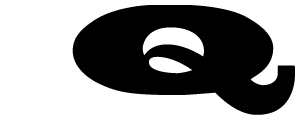

Q. Lacónico título de un breve artículo que Cuervo publicó en La Caridad, en 1871, donde nos avisa: “Origínase la q del qof de las lenguas semíticas, y si en verdad los alfabetos de ellas procedieron de jeroglíficos fonéticos, debió representarse con una cabeza, pues su nombre significa occipucio; trasplantados, como todos saben, los caracteres fenicios a Grecia por Cadmo, nuestra letra se llamó allí koppa, pero no fue admitida en el alfabeto samoateniense, y solo ocurre en monedas de Corinto y sus colonias, especialmente Siracusa; tuvo eso sí la peculiaridad de no emplearse sino antes de o, a diferencia de kappa, que era usual en otros casos. De los griegos recibieronla los latinos, con la forma Q y siendo solo usada, merced de la fidelidad de su abolengo, antes de u, letra correspondiente a la o en las derivaciones del griego”[1].
* * *
[1] Cuervo, Obras, iii, 1987, 20.